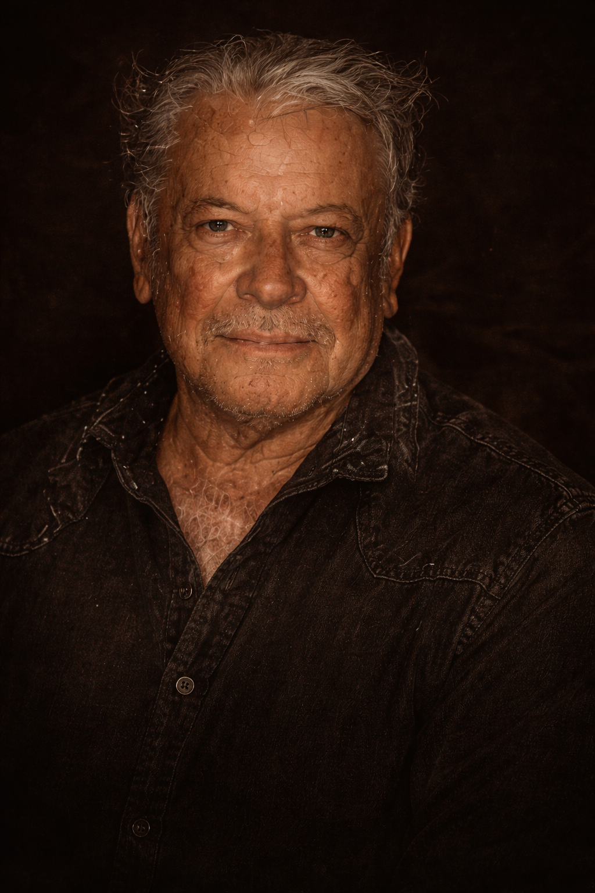

OUR STORY
Born from the Land.
Guided by restraint.
D’Oro begins with a family philosophy that never needed embellishment. Agave was cultivated with intention, the land was respected, and the process remained close to the hands that understood it best.
What started generations ago still defines the bottle today — depth over excess, patience over shortcuts, and a mezcal that speaks with honesty.